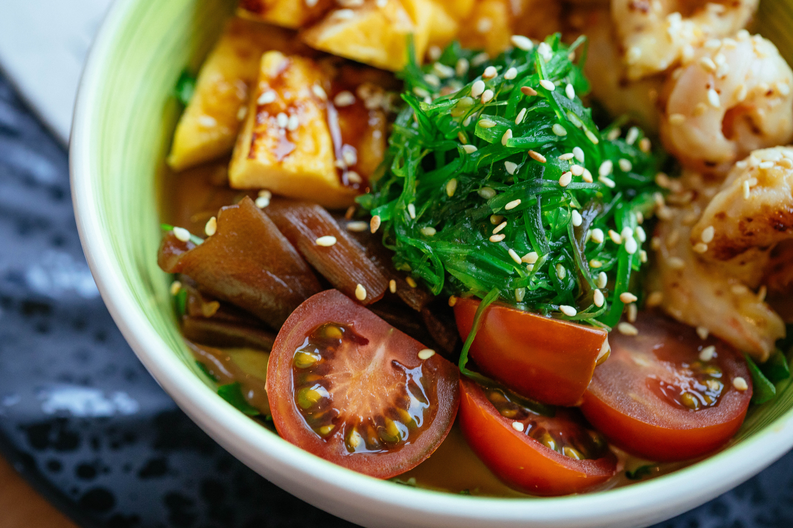

Cómo hacer un Poke Bowl
Disfruta de un delicioso y saludable Poke Bowl, lleno de sabores frescos y coloridos ingredientes.
Ingredientes:
- 200g de salmón fresco
- 1 taza de arroz de sushi
- 1 aguacate maduro
- 1 pepino
- 1 zanahoria
- Algas nori
- Edamame cocido
- Semillas de sésamo
- Salsa de soja
Pasos:
- Cocina el arroz de sushi siguiendo las instrucciones del paquete.
- Corta el salmón en cubos y marínalo en salsa de soja.
- Pela y corta el aguacate, el pepino y la zanahoria en rodajas.
- Coloca el arroz en el fondo del tazón.
- Agrega el salmón marinado, aguacate, pepino, zanahoria y edamame sobre el arroz.
- Decora con tiras de alga nori y espolvorea semillas de sésamo por encima.
- Sirve con más salsa de soja al gusto y disfruta tu delicioso Poke Bowl.